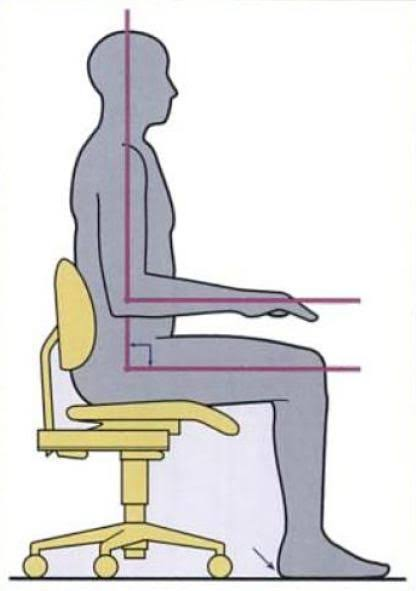

The first day your hands do the work. Setup before the patient, care during, technique on the bench.
This lesson assumes you can already recognize the core instruments by name and sight. If mirror, scaler, Weingart, Mathieu, ligature cutter, and distal-end cutter are not automatic yet, go back and drill them first. Everything today is built on top of that.
Setup happens before the patient walks in, not while they are sitting in the chair. Reading the Dolphin note first is what tells you which of these three setups you actually need, and pulling the right one ahead of time is the difference between a visit that runs on schedule and one that does not.
The setup you will build most often, since adjustments are roughly eighty percent of clinic volume.
Longer, more materials, and far less forgiving of a missing item. Once isolation is in and the field is dry, leaving the chair to fetch something costs you the whole setup.
For a newly erupted tooth or an emergency rebond. Shorter than IDB, but the positioning gauge and bracket tweezers are easy to forget because they are not on the adjustment pack.
Patients remember how we made them feel far longer than they remember which wire went in. The sequence below is not a formality, it is what makes a dental chair feel safe.
It catches problems before the doctor's check, which means they get solved during the visit the patient is already at rather than in an emergency appointment next week. Ask it every time, even when everything looks fine.
The AO Posture Rule: bring the patient to you. Do not contort your body to reach the patient. Careers in this field end from neck and back injury far more often than from anything dramatic, and those injuries accumulate from thousands of small compromises made because adjusting the chair felt like it would take too long.

Everything from here is bench work on the typodont. Go slowly. Speed on these tasks comes from repetition, and repetition of a sloppy technique only makes you reliably sloppy.
Plant a rigid ring-finger rest on dry, hard tooth structure before you begin working. The fulcrum creates a short lever, which gives you control at the working tip and keeps the instrument from traveling if the patient moves. Resting on soft tissue is not a fulcrum. It slips, and it hurts.
Lock the Mathieu, engage the module under tension, and seat it over the wings. The module should be stretched enough to control it, not so much that it deforms.
Scaler tip under the module, ring-finger fulcrum planted, then roll and flick the module off the wings. Control the direction it leaves in.
A module released without control becomes a projectile toward the patient's face or your own eyes. Both of you are in protective eyewear for exactly this reason, and it stays on.
Steel ties are not a default. They are placed deliberately, in situations where an elastomeric tie will not hold or will not deliver enough force. Knowing when matters as much as knowing how, because an unnecessary steel tie adds chair time and an omitted one loses control of a tooth.
Every situation above involves a force acting on the bracket — a spring pulling, a chain pulling, an elastic pulling, or torque being expressed. An elastomeric tie stretches and gives way under sustained load. A steel tie does not. When something is pulling on a tooth, the wire needs to stay in the slot.
Run your finger over the area after tucking. If you can feel the end, the patient will feel it every minute for six weeks. Tuck it again.
Un-tuck the pigtail, cut with the ligature cutter, then untwist and lift out. Keep control of the cut fragment.
Cut ends go straight into the sharps container. Not on the tray, not in the bracket tray, not "in a second." Immediately.
A lace, or lace tie, is a length of thin stainless-steel ligature wire that ties several teeth together as a group so they behave more like one connected unit. We use it to tighten small spaces while the patient is still in flexible NiTi, and to stop closed spaces from reopening after power chain.
Power chain closes the space. Lace holds the space closed.
Depending on the doctor's instructions a lace may span two teeth, several teeth, an anterior segment, or a larger section of the arch. The orthodontist decides which teeth are included and whether it is used alongside power chain. If you see both chain and lace on the same teeth, do not assume one is redundant. The chain provides elastic force to close; once closed, the lace provides a more rigid hold, which matters because chain loses force over time.
The goal is not maximum tightness. Overtightening distorts the archwire, places unintended force on the teeth, pulls brackets together improperly, creates discomfort, and breaks the ligature wire. Tighten only as instructed.
Lace is metal, and the cut end can be very sharp. Before the patient leaves: confirm the twisted end is fully tucked, run an instrument over the area, inspect the whole lace visually, and ask the patient whether anything feels poky.
Inspect existing lace for broken wire, loose sections, untucked ends, spaces reopening, wire irritating the gingiva, lace that has slipped off a bracket, and broken brackets within the laced segment. If anything looks unusual, tell the doctor before removing or replacing it.
NiTi aligns. Power chain closes. Lace consolidates and holds. Once spaces are closed, keeping them closed can be just as important as closing them.
Power chain and lace close space. An open coil spring does the opposite: it is compressed between two teeth so that it pushes them apart, creating or regaining space. If you understand that one difference, most of the handling follows from it.
The doctor determines where the spring goes, how much space is being created, and how much activation is wanted. Your job is to place it accurately, secure it so it stays where it was put, and leave nothing sharp or impinging.
The spring migrates. Without steel ties on the adjacent teeth, a compressed spring slides along the wire and stops working on the space it was meant to open.
The wire unseats. A compressed spring pushes against everything around it. If the archwire is not fully engaged and securely tied on both sides, the spring will lift it out of the slot.
Check whether the spring is still compressed and still in the right place, whether the space has opened, whether the adjacent steel ties are intact, and whether the ends are still atraumatic. A spring that has fully decompressed is no longer doing anything and should be reported.
Link continuous loops across the bracket wings to deliver steady force for space closure. Stretch it enough to engage each bracket cleanly, but over-stretching changes the force it delivers.
Scale it off in a controlled way, clipping with the ligature cutter across segments rather than pulling the whole run at once.
The steel tie tuck is the item to be honest about. Ask your trainer to run a finger over every tie you placed today. It is better to find a sharp end on a typodont than on a patient.